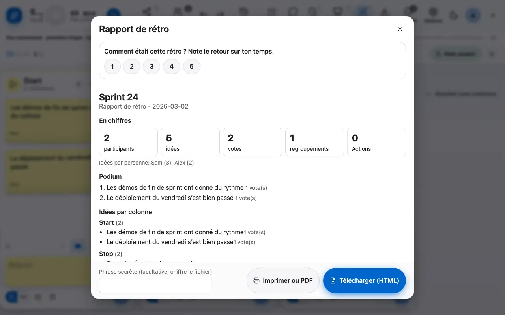
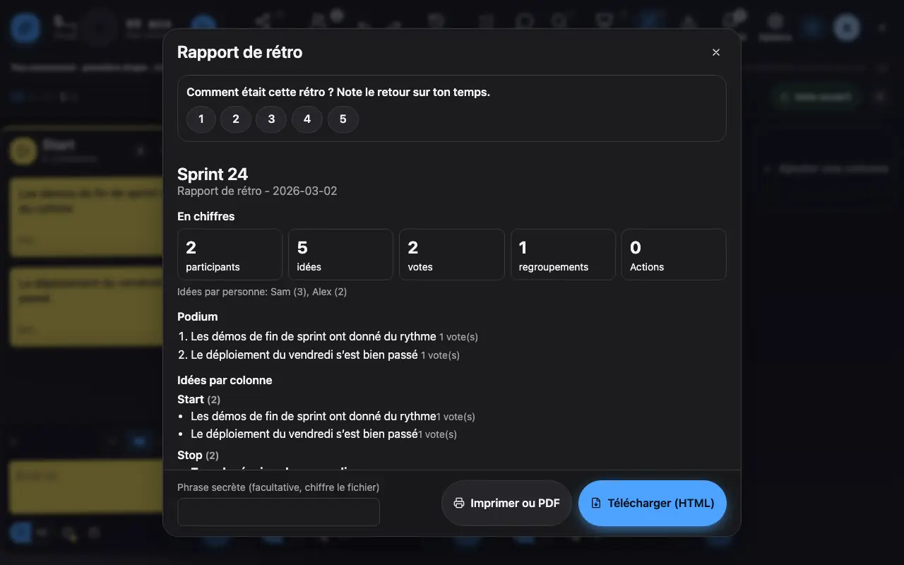
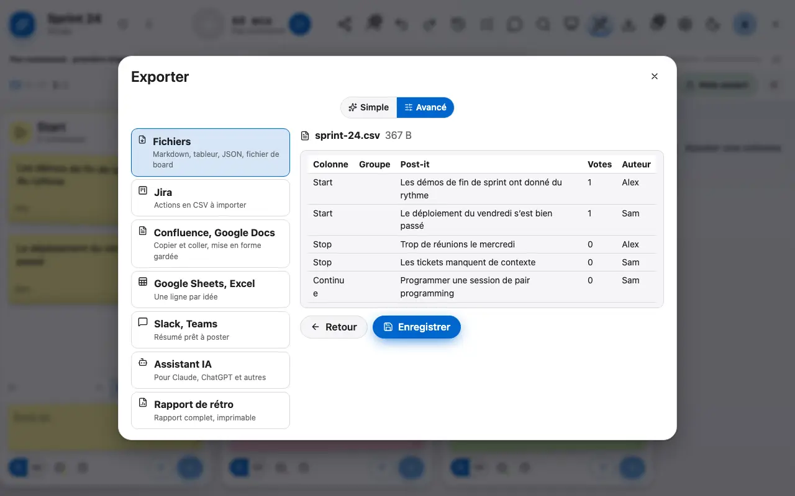
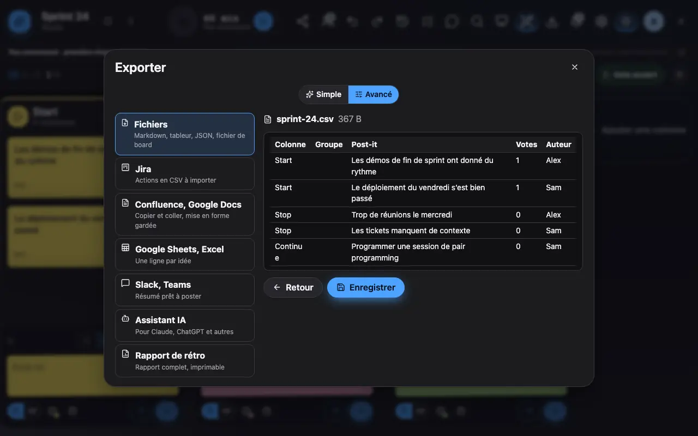
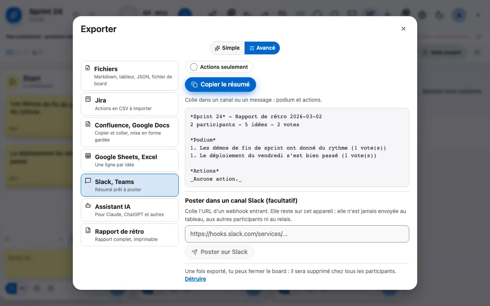
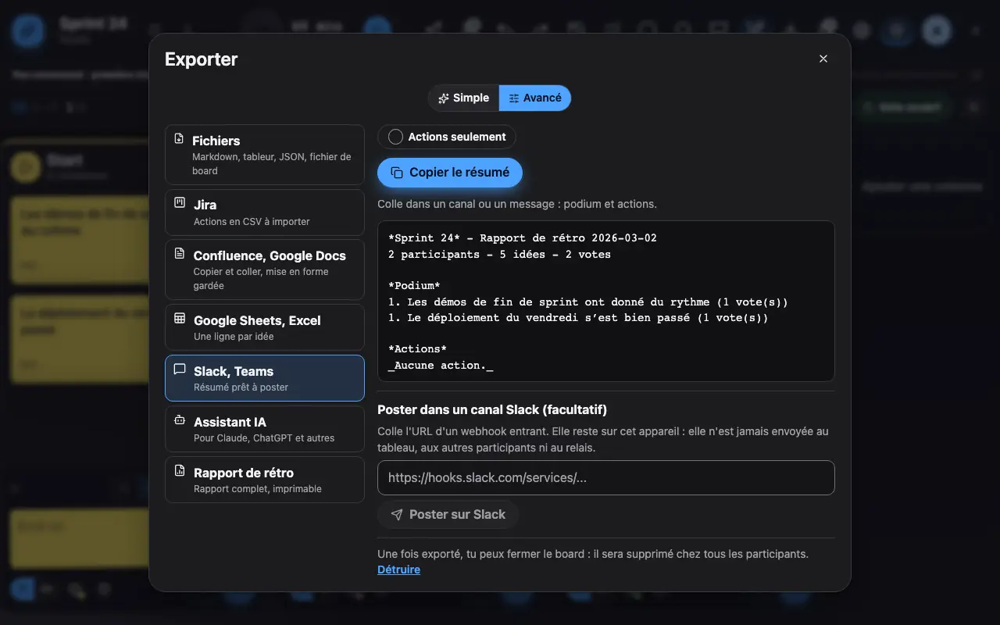

Exporter et garder une trace
Le rapport de rétro tient dans un seul fichier HTML autonome; chaque fichier se prévisualise avant d'être enregistré.
1 Le rapport rassemble le podium, les idées par colonne et les actions.
Le rapport de rétro rassemble les chiffres clés, le podium des idées les plus votées, les idées par colonne et les actions. Il se télécharge en un seul fichier HTML autonome, qui s'ouvre hors ligne; une phrase secrète optionnelle chiffre le fichier.


2 Avant d'enregistrer, le fichier s'affiche tel que tu le recevras, avec son nom et sa taille.
Chaque fichier que tu enregistres s'affiche d'abord tel que tu le recevras : le rapport et le HTML pour Confluence dans un cadre isolé, le Markdown mis en forme, les CSV et TSV en tableau, le JSON replié. Le nom et la taille du fichier sont indiqués; Enregistrer écrit exactement ce que tu vois, Retour revient aux destinations sans rien enregistrer.


3 Le résumé Slack se copie, ou se poste dans un canal avec ton webhook, gardé sur cet appareil.
Le résumé Slack se copie d'un clic. En mode avancé, tu peux aussi le poster directement dans un canal : colle l'URL d'un webhook entrant de ton espace Slack. Cette URL reste sur cet appareil (jamais envoyée au tableau, aux autres participants ni au relais, et absente du fichier de réglages); « Oublier l'URL » l'efface. Si Slack n'est pas joignable, copie le résumé et colle-le.

